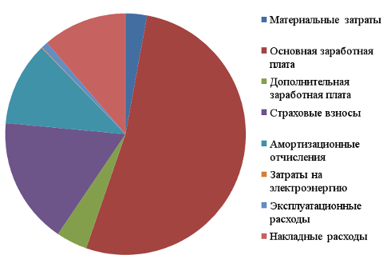

Разработка модулей индексирования термов в системе автоматического доказательства теорем prisnif
Выполнил: Арляпов С.В.
Руководитель: Черкашин Е.А.
Иркутск 2016 г.
Цели и задачи
- Цели:
- Исследовать предметную область
- Разработать программный продукт
- Задачи:
- Исследовать повышение
эффективности - Выделить набор функций
- Реализовать программный продукт
- Провести сравнение результатов
Полезность индексирования
(Vampire)
Теорема LCL-129-1.p
Через 270 секунд порождает 8 272 207 дизъюнктов. Из них 5 203 928 не включаются. Из остатка (3 068 279) остаются 8 053 обобщенных (gen).
Пространство поиска сократилось в 1000 раз.
Применение
индексирование
- Логическое программирование
- Функциональное программирование
- Автоматическое доказательство теорем
АДТ
- Системы планиования действий
- Системы поддержки принятия решений
- Экспертные системы
prisnif

Prisnif - система автоматического доказательства теорем, работающая в исчислении позитивно-образованных формул.
Общий вид ПО-формулы

| где Q - это квантор, X - множество переменных, А - набор атамарных формул, Fi - ПО-формула с квантором, который отличен от предыдущего квантора. |
Сравнение с языком Prolog

|
Фильтрация
| Дано L - множество термов R(l,t) - отношение t - терм запрос Необходимо найти M={l : l ∈ L, R(l,t)} |
Примеры R inst(l,t) ⇔ ∃𝜎 l=t𝜎; gen(l,t) ⇔ ∃𝜎 l𝜎=t; |
Операции над структурами индекса
Поддержка
|
Поиск
|
методы индексирования
//Origin f(g(a,b),c,k,g(l(e,m),d)) //Path Indexing f.1.g.1.a f.1.g.2.b f.2.c f.3.k f.4.g.1.l.1.e f.4.g.1.l.2.m f.4.g.2.d //Discrimination tree f.g.a.b.c.k.g.l.e.m.d
Техническая поддержка индекса
 База:f(g(a,b),c);f(g(b,c),a);f(g(a,d),d). База:f(g(a,b),c);f(g(b,c),a);f(g(a,d),d). |
 Терм-запрос:f(g(a,*),*) Inst:f(g(a,b),c);f(g(a,d),d). Терм-запрос:f(g(a,*),*) Inst:f(g(a,b),c);f(g(a,d),d). |
Добавление и удаление
 Добавление f(g(b,c),c). Добавление f(g(b,c),c). |
 Удаление третьего терма. |
Демонстрация результатов полученных в среде MATLAB
Реализация
| Язык программирования: Rust. Среда разработки: Visual Studio Code. Система контроля версий: Git. Дополнительно: Cargo, RustC, Gnome Terminal. |
Реализация структур
Index
pub struct Index<T> {
pub next: Vec<Index<T>>,
pub node_ind: usize,
pub pointer: T,
pub data: Vec<usize>,
pub num_type : bool
}
Реализация структуры
Base
pub struct Base<T> {
pub main_ind: Index<T>,
pub n_terms: usize
}
Перечень типажей
pub fn new<T>()->Base<T>;
pub fn add_term<T>(&mut self,s:&T);
pub fn del_term<T>(&mut self,i:&usize);
pub fn to_string(&self)->String.Перечень функций
pub fn inst<T>(base:&Base<T>,quest:&Index<T>)->Vec<usize>;
pub fn gen<T>(base:&Base<T>,quest:&Index<T>)->Vec<usize>.PString
f(g(a,b),c)
root_
f
1
g
1
a
2
b
2
cDTree
f(g(a,b),c)
root_
f [2]
g [2]
a
b
c Демонстрация реализации
Сравнение результатов
| Модуль | Время компиляции, мс |
Время работы, мс |
|---|---|---|
| PString | 88,85 ± 1,55 | 84,28 ± 1,78 |
| DTree | 92,71 ± 2,46 | 86,57 ± 1,68 |
Организационно-экономическая часть
Себестоимость разработки
Затраты на разработку рассматриваемого проекта составили 55 957 рублей.
Оценка результативности
| Научная результативность | Научно-техническая результативность |
Эргономические требования к организации рабочего места
Параметры рабочего места
| Фактические значения | Фактические значения | ||||
|---|---|---|---|---|---|
| Высота рабочей поверхности, см | Высота сиденья, см | Пространство для ног, см | Высота рабочей поверхности, см | Высота сиденья, см | Пространство для ног, см |
| 75 | 45 | 68 | 68-80 | 40-50 | > 65 |
ГОСТ Р ИСО 13406-1-2007 Эргономические требования к проведению офисных работ с использованием плоскопанельных терминалов
Заключение
- Исследована предметная область повышения производительности процесса построения поиска логического вывода;
- Выделен набор функций, который необходимо было реализовать:
- Добавление;
- Удаление;
- Поиск:
- Instantiation;
- Generalization.
- При помощи методов Path indexing и Discrimination tree разработаны структуры данных для индексов gen и inst;
- Произведена реализация библиотек на языке программирования Rust;
- Проведено тестирование и сравнение полученных результатов.